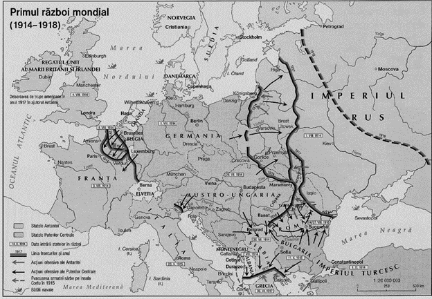

Primul Razboi Mondial a fost un conflict global major, desfasurat intre 1914 si 1918, care a implicat cele mai mari puteri ale lumii, organizate in doua tabere: Puterile Centrale (Germania, Austria-Ungaria si Imperiul Otoman) si Puterile Aliate (Franta, Marea Britanie, Rusia si mai tarziu, SUA si Italia).
